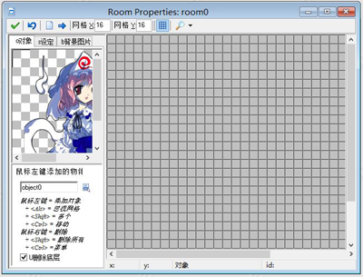
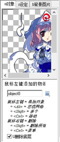
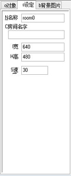
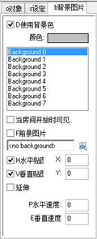

一个房间有大量的选项，除了设置房间属性和放置对象的实例外，你还可以添加背景，视野和贴图。大多数选项我们之后才会提到，在这个章节我们只讨论房间的基础设置，添加实例和背景
在资源菜单中选择创建房间，会出现如下界面：

在窗体的顶部有一个工具条，在这你可以设定用于对齐对象的网格大小， 还可以设定是否显示网格线，以及是否显示背景等，暂时隐藏房间的某些东西有时来说很有用。（你应该知道的是，即使物体被设置成了不可见，但在添加到房间里依然是会以一个问号显示，在游戏运行时会变为不可见）这里也有几个按钮可以用来清除房间中的所有实例，以及让实例按像素偏移（使用负值可以让它们朝左方和上方移动）当你想要扩大房间时，这个功能十分有用（你还可以用这个偏移功能将一些实例放置在房间外）最后有一个 撤销 来撤销最后一次对房间的操作，按 确定 按钮来关闭并保存对房间的变更（也可以点击右上方的关闭按钮选择不保存房间）
在左边，你会看到三个标签页（在高级模式下是5个），在对象标签中你可以增加对象实例到房间，在设置标签中可以更改一些房间设置，而在背景标签中你可以为房间设置背景图片

要添加实例到房间中，首先选择对象标签，下一步点击菜单按钮选择要添加的对象（或通过点击在左侧的图像区域），对象的图像会显示在左侧（注意，精灵的原点会以一个十字线显示在图像上，在将实例放置到房间中时会与网格线对齐）现在在右边的房间区域中单机左键，就可以将对象的实例放置到房间里了，并且会与网格对齐，如果你在按住<Alt>键的同时放置实例，实例不会与网格对齐；如果在放置实例时按住左键不放，你可以在房间中拖动实例，松开鼠标即可将它摆放到你想要的位置；如果按住<Shift>键且拖动鼠标，则会连续添加物体实例。按下鼠标右键可以删除实例，用上述的方法就可以确定房间的内容了。
在实践中你肯定会发现一个小细节：如果你在已有的实例上方放置实例，则会删除掉旧的实例，通常这是你想要的，但有些情况下可能不需要，你可以通过取消左下方的删除底层来避免这一现象
如果你想移动一个实例，可以按住<Ctrl>键和鼠标左键拖动实例（同时按住<Alt>键可以无视网格）
在按住<Ctrl>键时用鼠标右键单击实例会弹出一个菜单，在这里你可以删除实例，将实例移动到一个精确的位置，或者将实例置顶或置底。
每个房间都有自己的设定，单击设定选项卡可以更改它们

每个房间都有一个名称，最好给它一个有意义的名称。还有一个标题，当游戏运行时，此标题将显示在窗口标题中。你可以设定房间的宽度和高度（以像素为单位），还可以设定游戏的速度，这个是每秒的步数，速度越高，游戏越流畅，但你需要一个好一点的计算机，否则会适得其反。
在背景标签内你可以设定房间的背景图片，一个房间可以有多个背景，如下：

在顶部你可以看见背景色，点击那个色块可以进行更改。背景色仅在背景图像无法覆盖整个房间时有用，否则，最好取消使用背景色，因为这会降低效率。
上方有一个8个背景的列表，你可以一一定义它们，但通常情况只需要用到一两个。要定义一个背景，首先要在列表中选中它，然后点击复选框当房间开始时可见，不然的话你是看不见它的，然后点击下面的菜单选择背景图片，已定义的背景会以粗体显示。 这里有许多你可以更改的设定，你可以让图像水平/垂直平铺房间，还可以改变背景在房间中的位置（会影响平铺的位置），选中拉伸背景，会让背景按照房间的大小缩放填充，不会保持背景的长宽比。最后，你可以通过给它一个水平或垂直速度（单位为像素每步）来使背景滚动。 最好不要让拉伸背景滚动，因为图像会产生锯齿。
这里还有一个复选框是作为前景图片，当你选中此框时背景会变成前景，绘制在一切的上方，而不是下方。显然，这样的图片只有部分透明才有用。